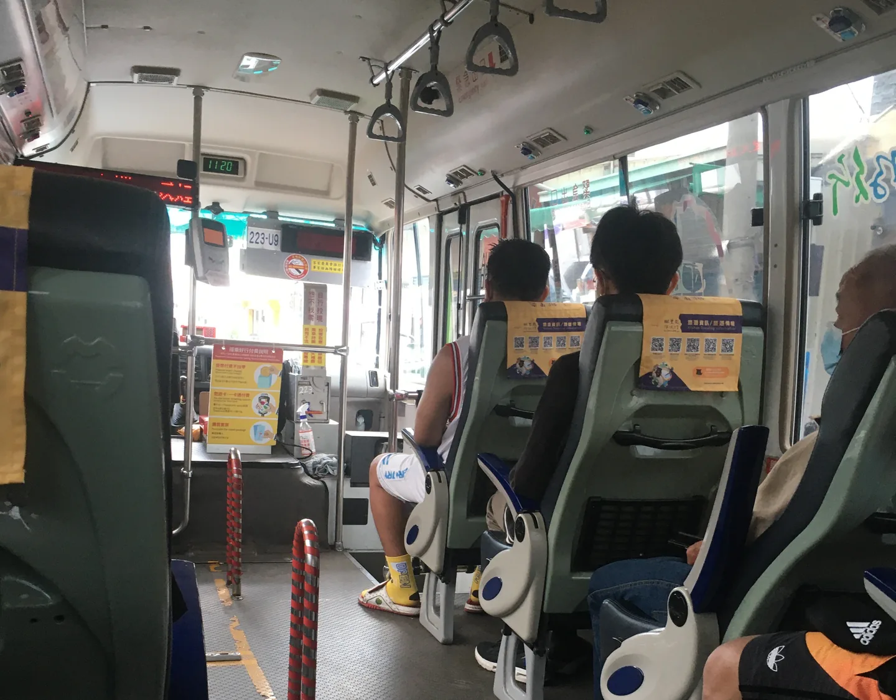

一個有餘裕的地方
因為好一段時間沒有正職工作，回老家蹭飯的時間就變長了。
雖然老家不是真的超鄉下，附近工業區一直在發展、人口也確實一直成長，但到市區的公車每小時一班，20年來都是如此，發現（應該是）離峰時段的公車從大巴變成小巴，更是讓我震驚不已。人口減少到這種程度了？是從外地移入、有車的年輕人數量，趕不上需要搭公車卻逐漸凋零的老人嗎？
而關於在老家搭公車，碰到幾次小插曲。
有兩次趁著剛發車、快到終點站卻有我一個乘客時，司機大哥禮貌地向我打聲招呼，順路彎進加油站加油，甚至有一次直接繞了路；有一次一個腿腳不利索的婆婆上車，門一開便聽到他大聲喊著「不好意思！可以拉我一把嗎？」，應該是因為小巴的設計，司機不便從他的位子移動乘客的上車門，婆婆喊了兩三聲，我才拿掉耳機趕緊過去拉一把，對方連聲道謝，再回到座位上，隔壁的婦人側頭和我說：「我很想幫忙，但怕會被拉下去。」搭配了稱讚的眼神和動作。婆婆準備下車時，同樣迅速地喊著：「我可以自己來！謝謝大家！」慢慢地移動下車。
一台車上雖然不過5、6個人，有老有少（老的居多？），對於因為婆婆的慢動作而多等了一些時間，沒有人做出困擾的反應；而婆婆肯定也是一個搭公車的能手，上車時把握時間尋求協助，下車時也趕快讓大家知道他很好。我覺得也是經歷了很多次其他人的包容和幫忙，行動不便的婆婆才會持續且願意搭乘公車移動，我相信有很多老人家因為身體病痛不方便、怕成為他人困擾，而關在家裡不出門反而退化更快的。
琢磨了幾日，我想到的是「餘裕」，不是時間真的很充裕，而是心態。回老家蹭飯的我不趕時間，司機大哥或許不「守規矩」，但細想這些也不過是3分鐘的事情。在這種小地方會搭公車的人，因為班次少，如果和他人有約，大概都會是「提早半個小時到的人」。
在台北時，我也很常搭公車，「匆忙地理所當然」是這個城市的常態，自己經歷過、也看過不過距離車門2公尺也被無情地拋下，那個看著離去的公車站在原地喘息的人們，不分男女老少，當然還有更多讓人覺得不近人情的體驗。
有一回和司機聊天，他每天要開三趟（安坑⇋松山），塞車的話一趟得開3個多小時，薪水也不是很高。好像可以理解在這樣的環境下，司機會想趕快下班的心情（除了開得快，也可能包含服務會更省略），說白了是犧牲服務的人情味。
沒有餘裕留給陌生人，專注在自己的事務上，雖然城市的條件和體質不同，不過這兩年讓我深深的覺得，我喜歡那種願意包容他人的餘裕，無論是我對待別人，還是別人這麼對待我。
友人說市區的交通很亂，機車只能騎20km/h，還會碰到前面不曉得為什麼堵住了（通常是因為很愚蠢的違停行為導致通道變窄），但也沒有人按喇叭，就是探頭看一看、等一等，不久後便再次暢通。
或許是因為這個小地方不夠發達，才能包容這些餘裕和人情味，那我很任性地寧願這裡繼續是個下鄉小地方。
我也越來越渴望自己能夠回到這裡生活。
